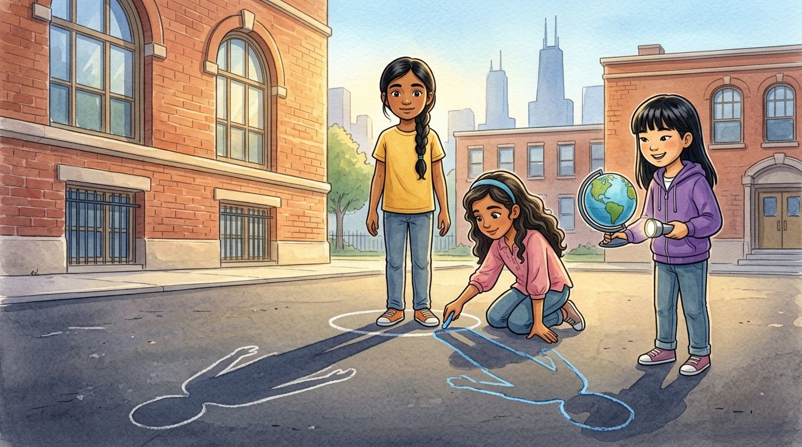

Grade 5 · Science · 5-ESS1-2
Three shadows in one day
A story about the patterns we see in the sky every day and every season.
Tres sombras en un día. Un cuento sobre los patrones que vemos en el cielo cada día y en cada estación.
Science words you will learn
Tap a green word to see what it means.
Toca una palabra verde para ver qué significa. Con la ayuda activada, verás también la definición en español.
The story
El cuento está en inglés. Pulsa «Listen to the story» para escucharlo y toca las palabras verdes cuando no entiendas una.
At nine o'clock in the morning, Ms. Kowalski took the class out to the schoolyard with a box of chalk. Salma stood on an X drawn on the ground, and Selena traced her in blue chalk. It was long, very long, and it pointed toward the west, away from the Sun, which was low in the east.
At noon, they went outside again. Salma stood on the same X, facing the same way. This time, Selena traced the shadow in green. It was very short, because the Sun was high in the sky. "My shadow shrank," said Salma. "Maybe I should eat more vegetables."
At three in the afternoon, they went out one last time. Selena traced the shadow in red. It was long again, but now it pointed toward the east, the other way. "It's like the shadow walked around me," said Salma.
"Does the Sun move?" asked Selena. Back in the classroom, Sophia turned off the lights. She held a flashlight still, like the Sun, and slowly turned a globe. "The Sun doesn't move across the sky," she said. "Earth on its . As it spins, the Sun seems to move from east to west, and the shadows change."
Sophia stuck a tiny paper person on Chicago and kept turning the globe. When Chicago faced the flashlight, the paper person was in the light. When Chicago turned away, it was in the dark. "That's why we have day and night," said Ms. Kowalski. "Earth makes one full turn every 24 hours."
"And it happens every day, the same way," said Salma. "Morning, long shadow. Noon, short shadow. Afternoon, long again." "That's a ," said the teacher. "Patterns help scientists predict what will happen next."
Then Ms. Kowalski showed them two pictures of the night sky over Chicago. One was from winter, and one was from summer. In the winter sky, they could see the Orion. In the summer sky, Orion wasn't there, but other groups of stars were.
"Why do the stars change?" asked Selena. "Because Earth also travels around the Sun," said Sophia, walking the globe in a big circle around the flashlight. "That trip is called an , and it takes a whole year. In each season, the night side of Earth faces a different part of space."
Before going home, Salma stood on the X one more time. Her shadow was long and pointed east. "It's almost three o'clock," she said, without looking at the clock. Ms. Kowalski checked her watch: 2:58. "Impressive," she said. "You just used a pattern to tell time."
Glossary
- shadow
- A dark shape that forms when an object blocks the light.
- sombra: Una figura oscura que se forma cuando un objeto tapa la luz.
- pattern
- Something that repeats in a way we can predict.
- patrón: Algo que se repite de una manera que podemos predecir.
- rotate
- To spin around. Earth rotates once every 24 hours.
- rotar: Girar sobre sí mismo. La Tierra rota una vez cada 24 horas.
- axis
- An imaginary line through the middle of Earth, from the North Pole to the South Pole, around which it spins.
- eje: Una línea imaginaria que atraviesa la Tierra del Polo Norte al Polo Sur, y alrededor de la cual gira.
- orbit
- The path that Earth follows around the Sun. One trip takes one year.
- órbita: El camino que sigue la Tierra alrededor del Sol. Una vuelta dura un año.
- constellation
- A group of stars that seems to form a picture in the sky.
- constelación: Un grupo de estrellas que parece formar una figura en el cielo.
Questions
Choose the correct answer. If you make a mistake, the story shows you where the answer is.
Elige la respuesta correcta. Si te equivocas, el cuento te muestra dónde está la respuesta.
-
Question A. Why was the morning shadow long and pointing west?
¿Por qué la sombra de la mañana era larga y apuntaba al oeste?
In the morning the Sun was low in the east, so the shadow was long and pointed away from it, toward the west.
-
Question B. What was Salma's shadow like at noon?
¿Cómo era la sombra de Salma al mediodía?
At noon the shadow was very short, because the Sun was high in the sky.
-
Question C. Why does the Sun seem to move across the sky?
¿Por qué parece que el Sol se mueve por el cielo?
The Sun does not move across the sky: Earth rotates on its axis, so the Sun seems to move.
-
Question D. What causes day and night?
¿Qué causa el día y la noche?
Earth makes one full turn every 24 hours, so each place faces the Sun and then turns away.
-
Question E. What was different in the winter and summer night skies?
¿Qué era diferente en el cielo nocturno de invierno y de verano?
Orion was in the winter sky, but not in the summer sky, where other groups of stars appeared.
Challenge: explain your thinking
Use data
A flagpole's shadow is 12 feet long at 8 a.m., 3 feet long at noon and 11 feet long at 4 p.m. Make a bar graph of these data. What pattern do you see, and why does it happen?
Usa datos. La sombra de un asta de bandera mide 12 pies a las 8 a. m., 3 pies al mediodía y 11 pies a las 4 p. m. Haz una gráfica de barras con estos datos. ¿Qué patrón ves y por qué ocurre?
Answer in your notebook or talk it over with a classmate. Use evidence from the story.
Responde en tu cuaderno o coméntalo con un compañero. Usa evidencia del cuento.
Check your thinking
The bars are tall in the morning, short at noon and tall again in the afternoon. The shadow is long when the Sun is low in the sky and short when the Sun is high. This happens because Earth rotates, so the Sun seems to rise in the east, climb high at noon and go down in the west.